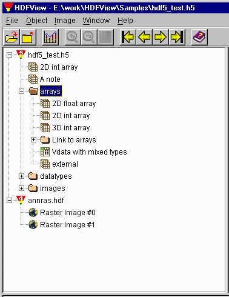
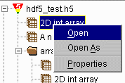
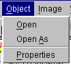
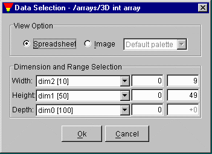
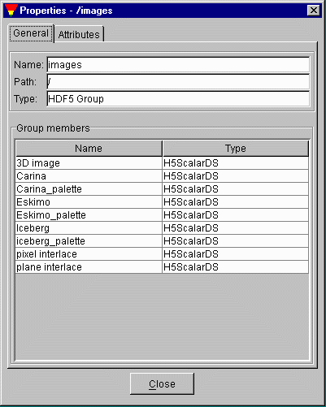
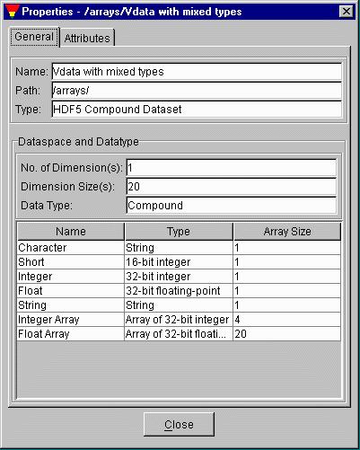
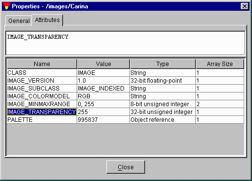

Since objects can have names in more than one group, the set of all objects in an HDF file is a directed graph. It is difficult to manipulate and browse the graph on a 2D virtual screen. Instead of showing the directed graph of the HDF file structure, HDFView displays HDF objects in an conventional structure of a tree of "folders"; breaking the "loops" in the graph when necessary. The tree viewer of HDFView provides users an easy way to browse and manage HDF data objects in an HDF file.
Groups are presented as folders in the tree viewer. Opening and closing folders, you can browse the individual HDF objects in the HDF file. Datasets, images and tables are leaf objects in the tree. Clicking a leaf object, you see the content of the object displayed in the data/document window on the right of the HDFView. Figure 4.1 illustrates that an HDF4 file, annras.hdf, and an HDF5 file, hdf5_test.h5, are currently open by the HDFView.

Figure 4.1 The Tree Viewer
To select an object in the tree, point mouse on the object and click once on the object. You can open the data content of the selected data object from menu bar or the popup menu.
The popup menu appears by clicking the right mouse button on the object in the tree view. When a command is selected from the popup menu, the command action will be taken on the object clicked.

Figure 4.2 The Object Popup Menu
The object menu in the HDFView menu bar contains the same commands in the popup menu.

Figure 4.3 The Object Menu
You can open a data object in the tree by a double-mouse-click or selecting open command from menu bar or popup menu. By default, data content is displayed as an image, a table or text based on its datatype.
Using "Open As", you can select a subset of dataset to display or change the default display options. For example, you can display the data values an image in spreadsheet, or show a scalar dataset as an image. For multi-dimension dataset, you use the display option window to select three dimensions to display.

Figure 4.4 The Display Option
General metadata includes the name, type, path of the data object.
For groups, general metadata also includes the name, type, size of all the members of the group. Figure 4.5 shows an example of the general information of group.

Figure 4.5 General Properties of HDF group.
For a dataset (or image), the general metadata includes the dataspace information (rank, current and maximum size of each dimensions), datatype information (type, size, order). Figure 4.6 shows an example of the metadata for a dataset.

Figure 4.6 General Properties of Dataset.
To see the attributes of an object, you click the "Attribute" tab at the Object Property Window. The name, type, size and value of all attributes of the slected object are displayed in a table. Figure 4.7 shows and example of the attribute display.

Figure 4.7 HDF Attributes
Updated 3/25/2002